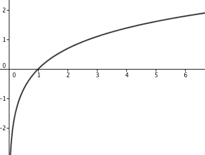
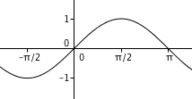
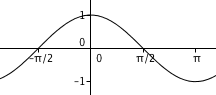
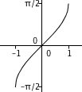
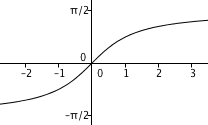
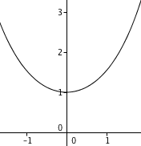

Résumé de cours : études des fonctions usuelles
Généralités sur les fonctions
- Soit $I$ un intervalle symétrique par rapport à $0$ et $f:I\to\mathbb R$. On dit que $f$ est paire si pour tout $x\in I$, $f(-x)=f(x)$. La courbe représentative $\mathcal C_f$ de $f$ dans un repère orthonormé est alors symétrique par rapport à l'axe $(Oy)$.
- Soit $I$ un intervalle symétrique par rapport à $0$ et $f:I\to\mathbb R$. On dit que $f$ est impaire si pour tout $x\in I$, $f(-x)=-f(x)$. La courbe représentative $\mathcal C_f$ de $f$ dans un repère orthonormé est alors symétrique par rapport à l'origine.
- Soit $f:\mathbb R\to\mathbb R$ et soit $a>0$. On dit que $f$ est périodique de période $a$ si, pour tout $x\in\mathbb R$, $f(x+a)=f(x)$. La courbe représentative $\mathcal C_f$ de $f$ dans un repère orthonormé est invariante par translation de vecteur $a\vec i$.
- Si $f:\mathbb R\to\mathbb R$ vérifie $f(a-x)=f(x)$ pour tout $x\in\mathbb R$, alors la courbe représentative $\mathcal C_f$ de $f$ dans un repère orthonormé est alors symétrique par rapport à la droite $x=a/2$.
Limites de fonctions - dérivabilité
- Composition des limites : soient $I,J$ deux intervalles de $\mathbb R$, $f:I\to J$, $g:J\to\mathbb R$, $a\in I$, $b\in J$ et $\ell\in\mathbb R$. On suppose que $\lim_{x\to a}f(x)=b$ et que $\lim_{x\to b}g(x)=\ell$. Alors $$\lim_{x\to a} g\circ f(x)=\ell.$$
- Théorème : Soit $I$ un intervalle de $\mathbb R$ et soit $f:I\to\mathbb R$ dérivable.
- $f$ est croissante sur $I$ si et seulement si, pour tout $x\in I$, $f'(x)\geq 0$;
- si pour tout $x\in I$, on a $f'(x)>0$ sauf éventuellement pour un nombre fini de réels $x$, alors $f$ est strictement croissante.
- Soient $I$ un intervalle et $f,g:I\to\mathbb R$ dérivables. Alors $f+g$ et $fg$ sont dérivables, et $$(f+g)'=f'+g'$$ $$(fg)'=f'g+fg'.$$
- Soient $f,g:I\to\mathbb R$ deux fonctions dérivables en $a\in I$. Si de plus $g(a)\neq 0$, alors $f/g$ est dérivable en $a$ et $$\left(\frac f g\right)'(a)=\frac{f'(a)g(a)-f(a)g'(a)}{\big(g(a)\big)^2}.$$
- Soient $I,J$ deux intervalles de $\mathbb R$, $f:I\to J$, $g:J\to\mathbb R$, $a\in I$, $b\in J$ avec $b=f(a)$. On suppose que $f$ est dérivable en $a$ et $g$ est dérivable en $b$. Alors $g\circ f$ est dérivable en $a$ et $$(g\circ f)'(a)=f'(a)g'(f(a)).$$
Fonctions réciproques- Si $f:I\to\mathbb R$ est continue et strictement monotone, alors $f$ réalise une bijection de $I$ sur $f(I)=J$.
- Si $f:I\to\mathbb R$ est dérivable et vérifie $f'>0$ (resp. $f'<0$) sur $I$, alors $f$ réalise une bijection de $I$ sur $f(I)=J$, la réciproque $f^{-1}:J\to\mathbb R$ est dérivable et, pour tout $b\in J$, $$(f^{-1})'(b)=\frac 1{f'(f^{-1}(b))}.$$
- Si $f:I\to \mathbb R$ est une bijection, si $\mathcal C_f$ et $\mathcal C_{f^{-1}}$ sont les courbes représentatives respectives de $f$ et de $f^{-1}$, alors $\mathcal C_f$ et $\mathcal C_{f^{-1}}$ sont symétriques par rapport à la droite $y=x$.
Fonction logarithme népérien- Notation : $\ln x$
- Domaine de définition : $]0,+\infty[$
- Propriétés opératoires : $$\forall a,b>0,\ \forall n\geq 1,\ \ln(ab)=\ln(a)+\ln(b),\ \ln\left(\frac ab\right)=\ln a-\ln b,\ \ln(a^n)=n\ln a.$$
- Dérivée : $x\mapsto \frac 1x$
- Sens de variation : croissante
- Limites aux bornes : $\lim_{x\to 0}\ln x=-\infty$, $\lim_{x\to+\infty}\ln x=+\infty$.
- Courbe représentative :

- Logarithme de base $a$ : pour $a>0$ et $a\neq 1$, $\log_a(x)=\frac{\ln x}{\ln a}$.
Fonction exponentielle- Notation : $e^x$ ou $\exp(x)$;
- Domaine de définition : $\mathbb R$;
- Propriétés opératoires : $$\forall a,b\in\mathbb R,\ \forall n\in\mathbb Z,\ \exp(a+b)=\exp(a)\exp(b),\ \exp(a-b)=\frac{\exp(a)}{\exp(b)},\ \exp(na)=(\exp a)^n.$$
- Dérivée : $\exp(x)$;
- Sens de variation : croissante
- Limites aux bornes : $\lim_{x\to-\infty}\exp(x)=0$, $\lim_{x\to+\infty}\exp(x)=+\infty$;
- Courbe représentative :

- Exponentielles de base $a$ : pour $a>0$, $a^x=\exp(x\ln a)$.
Fonctions puissance- Définition : pour $\alpha\in\mathbb R$, $x^\alpha=\exp(\alpha \ln x)$;
- Domaine de définition : $\mathbb R_+^*$, sauf si $\alpha$ est un entier naturel. Dans ce cas, le domaine de définition est $\mathbb R$.
- Dérivée : $\alpha x^{\alpha-1}$;
- Sens de variation : croissante si $\alpha>0$, décroissante si $\alpha<0$, constante si $\alpha=0$.
- Limites aux bornes :
- si $\alpha>0$, alors $\lim_{x\to 0}x^\alpha=0$ et $\lim_{x\to+\infty}x^\alpha=+\infty$;
- si $\alpha<0$, alors $\lim_{x\to 0}x^\alpha=+\infty$ et $\lim_{x\to+\infty}x^\alpha=0$;
- Propriétés algébriques : pour tous $\alpha,\beta\in\mathbb R$, pour tout $x>0$, on a $$(xy)^\alpha=x^\alpha y^\alpha,\ x^{\alpha+\beta}=x^\alpha x^\beta,\ (x^\alpha)^\beta=x^{\alpha\beta}.$$
- Courbe représentative :

Croissance comparée$$\begin{array}{lll} \forall \alpha,\beta>0, \lim_{x\to+\infty}\frac{x^\alpha}{(\ln x)^\beta}=+\infty&&\forall\alpha\in\mathbb R, \lim_{x\to+\infty}\frac{e^x}{x^\alpha}=+\infty\\ \forall \alpha,\beta>0, \lim_{x\to 0^+}{x^\alpha}{|\ln x|^\beta}=0&&\forall\alpha\in\mathbb R, \lim_{x\to-\infty}e^x|x|^\alpha=0\\ \end{array}$$Fonctions sinus, cosinus, tangenteNom sinus cosinus tangente Notation $\sin x$ $\cos x$ $\tan x$ Départ et
arrivée$\mathbb R\to[-1,1]$ $\mathbb R\to[-1,1]$ $\mathbb R\backslash\{\frac\pi2+k\pi,\ k\in\mathbb Z\}\to\mathbb R$ Parité Impaire Paire Impaire Période $2\pi$ $2\pi$ $\pi$ Dérivée $\cos x$ $-\sin x$ $1+\tan^2 x=\frac 1{\cos^2 x}$ Monotonie Croissante sur $[-\pi/2,\pi/2]$ Décroissante sur $[0,\pi]$ Croissante sur $]-\pi/2,\pi/2[$ Courbe
représentative   Fonctions arcsin, arccosinus, arctangente
Fonctions arcsin, arccosinus, arctangenteNom arcsinus arccosinus arctangente Notation $\arcsin x$ $\arccos x$ $\arctan x$ Départ et
arrivée$[-1,1]\to[-\pi/2,\pi/2]$ $[-1,1]\to[0,\pi]$ $\mathbb R\to ]–\pi/2,\pi/2[$ Lien avec les
fonctions circulaires$\small y=\arcsin x\iff \left\{ \begin{array}{l} x=\sin y\\ y\in\left[\frac{-\pi}2,\frac\pi2\right] \end{array}\right.$ $\small y=\arccos x\iff \left\{ \begin{array}{l} x=\cos y\\y\in[0,\pi] \end{array}\right.$ $\small y=\arctan x\iff \left\{ \begin{array}{l} x=\tan y\\y\in\left]\frac{-\pi}2,\frac\pi2\right[ \end{array}\right.$ Parité Impaire Ni paire, ni impaire Impaire Dérivée $\frac 1{\sqrt{1-x^2}}$ $-\frac 1{\sqrt{1-x^2}}$ $\frac1{1+x^2}$ Monotonie Croissante Décroissante Croissante Limites Sans objet Sans objet $\lim_{x\to+\infty}\arctan x=\frac\pi2$ Courbe
représentative 
 Formules $\forall x\in [-1,1], \arccos x+\arcsin x=\frac\pi 2$ $\small \forall x> 0,\ \arctan x+\arctan\frac 1x=\frac\pi2.$ Fonctions sinus hyperbolique, cosinus hyperbolique, tangente hyperboliqueNom sinus hyperbolique cosinus hyperbolique tangente hyperbolique Définition $\sh x=\frac{e^x-e^{-x}}2$ $\ch x=\frac{e^x+e^{-x}}2$ $\th x=\frac{\sh x}{\ch x}=\frac{e^x-e^{-x}}{e^x+e^{-x}}$ Départ et
arrivée$\mathbb R\to\mathbb R$ $\mathbb R\to [1,+\infty[$ $\mathbb R\to]-1,1[$ Parité Impaire Paire Impaire Dérivée $\ch x$ $\sh x$ $1-\th^2 x=\frac 1{\ch^2 x}$ Monotonie Croissante Croissante sur $\mathbb R_+$ Croissante Limites $\lim_{x\to+\infty}\sh x=+\infty$ $\lim_{x\to+\infty}\ch x=+\infty$ $\lim_{x\to+\infty}\th x=1$ Courbe
représentative
 
Formules $\ch^2(x)-\sh^2(x)=1$